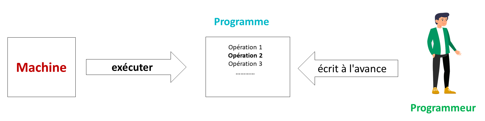

C’est quoi l’ordinateur ?
Il est certain que vous avez déjà utilisé un ordinateur ou un téléphone portable. Mais avez-vous déjà demandé : qu’est-ce qu’un ordinateur?
Comme vous êtes des débutants dans le domaine de la programmation informatique, je vais répondre plusieurs questions dans ce chapitre :
- C’est quoi l’ordinateur ?
- Quel sont les composants de cet ordinateur ?
- Et pourquoi les ordres sont écrits en 0 et 1 ?
Je ne vais pas entrer dans les détails techniques pour rester simple et claire.
Un ordinateur est une machine électrique capable d’exécuter un programme qui comprend une série d’opérations compréhensibles par cette machine. Ce programme est écrit à l’avance par un programmeur.

Le nom « Ordinateur »
Le nom Ordinateur a été choisi par le département marketing de la société « IBM » pendant la commercialisation de son ordinateur.
C’est un nom choisi à l’aide d’un professeur universitaire spécialisé en histoire des langues. Car le vrai nom de l’ordinateur qui vient de l’anglais « Computer », en français calculateur.
Donc, l’ordinateur agit comme un calculateur.
Les opérations sont écrit en 0 et 1
L’ordinateur est une machine électronique. Il se compose de plusieurs circuits électroniques numériques qui ne peuvent traiter que deux états : le courant passe ou le courant ne passe non.
Pour illustrer, voici un circuit électrique qui comporte deux parties : le générateur d’électricité et l’interrupteur.
- Lorsque l’interrupteur est ouvert, le courant ne circule pas dans le circuit.
- Cependant, lorsque l’interrupteur est fermé, le courant circule dans le circuit.
Nous avons attribué à ces deux états les valeurs 0 et 1, nommées valeurs binaires.
C’est pour ça que les opérations données à l’ordinateur sont écrites en 0 et 1.
On dit que le programme est écrit en langage binaire. C’est à dire qu’il est écrit en 0 et 1
Composition d’un ordinateur
Je vais maintenant vous présenter les composants de l’ordinateur selon la vue extérieure et la vue intérieure.
L’ordinateur vu de l’extérieur

L’ordinateur vu de l’intérieur

L’écran - ordinateur vu extérieur
Selon la vue extérieure.
Écran
Parmi les composant d’ordinateur : l’écran. C’est celui qui va interagir avec l’utilisateur. L’écran est la partie de l’ordinateur qui va afficher du contenu.

L’unité centrale
C’est le boîtier qui contient tout le matériel électronique indispensable au fonctionnement de l’ordinateur.

La souris
C’est elle qui permet de déplacer le curseur sur l’écran.
Le clavier
Il permet d’écrire du texte et de communiquer avec l’ordinateur

Ordinateur vu intérieur
Je vais maintenant vous montrer les composants internes de l’ordinateur
Processeur - ordinateur vu intérieur

Carte mère
Tout d’abord, nous avons la carte-mère. C’est une plaque qui contient un circuit imprimé sur lequel sont fixés les composants électroniques principaux de l’ordinateur.
Disque dure
C’est la mémoire de l’ordinateur. Il est chargé de stocker des données informatiques.
Mémoire vive
Il est également appelé RAM (Random Access Memory). Cette mémoire est utilisée par le processeur. Il y stocke les données durant son traitement.
Carte graphique
Elle gère l’affichage de l’ordinateur. Il décharge le processeur de cette fonction d’affichage.
Carte son
Il gère tous les sons de l’ordinateur aussi bien en entrée qu’en sortie.
Processeur
Et dernièrement, le processeur. Il s’appelle aussi CPU (Central Processing Unit). Le processeur est le cerveau de l’ordinateur. Tous les traitements s’effectuent à l’intérieur de ce processeur.
Ce processeur permet de faire trois choses :
- lire les données en mémoire;
- Traiter les données;
- Écrire des données en mémoire;
C’est quoi un ordinateur

Dans cette partie de formation, je vous ai montré ce qu’est un ordinateur et quels sont ses composants. Et nous avons aussi vu le processeur et son rôle principale.
Ce processeur exécute un programme écrit en 0 et 1. On dit aussi qu’il est écrit en binaire.Ce programme est écrit à l’avance par un programmeur.
Ici, il faut poser la question suivante : comment le programmeur arrive-t-il à écrire un programme qu’en utilisant 0 et 1 ?
Est-ce qu’il existe des méthodes ou des autres langages pour réaliser ce type de travail.
Je vais répondre à ces questions dans les prochaines chapitres.